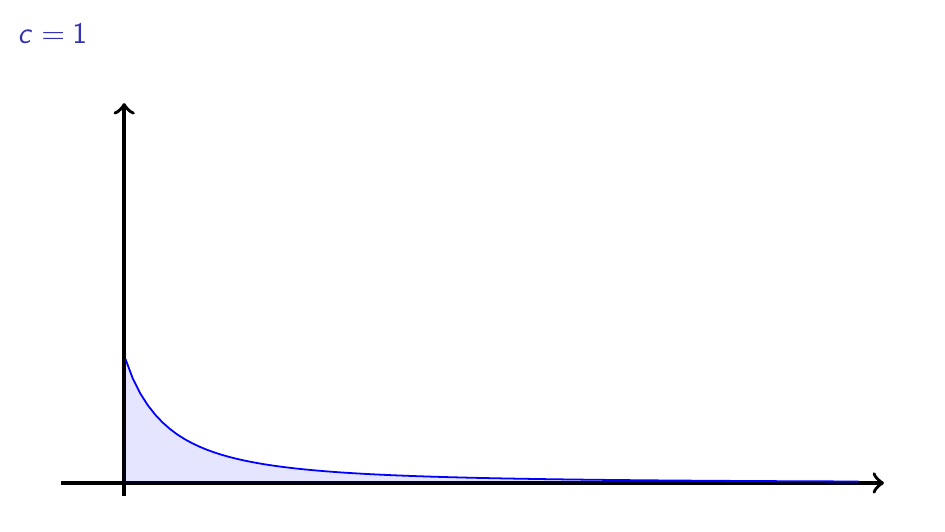
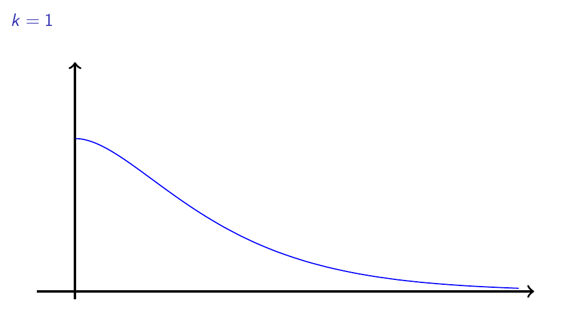

Ολο-clear-ώματα: Το θεώρημα Frullani#
Ο πίνακας Η παραλία στη Vilerville του Eugène Boudin.#
Σε αυτό το μέρος της σειράς Ολο-clear-ώματα (ναι, είναι πολύ cringe το όνομα, αλλά τι να κάνουμε τώρα) θα εξερευνήσουμε ένα ενδιαφέρον θεώρημα το οποίο, προσωπικά, όταν το είχα «ανακαλύψει», με είχε εντυπωσιάσει αρκετά. Αρχικά, να αναφέρουμε έτι μία φορά, ότι η ολοκλήρωση και η παραγώγιση είναι δύο πράξεις που, καίτοι σε έναν μεγάλο βαθμό «ᾷντίστροφες» η μία της άλλης - αν και η ολοκλήρωση δε συμπίπτει με αυτό που λέμε αντιπαραγώγιση - στην πράξη είναι η μέρα με τη νύχτα. Πράγματι, η παραγώγιση - η μέρα - είναι μία απλή και στρωτή πράξη από αλγοριθμικής σκοπιάς. Έχουμε πέντε-δέκα κανόνες παραγώγισης, έχουμε και τις παραγώγους των βασικών μας συναρτήσεων, και πορευόμαστε ομαλά. Μπορεί, προφανώς, οι πράξεις καθεαυτές να είναι κουραστικές και να περιλαμβάνουν αυτό που συχνά αποκαλούμε «λάντζα», αλλά αυτό δεν είναι και τόσο μεγάλο πρόβλημα - γιατί έχουμε, άλλωστε, τους υπολογιστές στη διάθεσή μας;
Ωστόσο, με την ολοκλήρωση - τη νύχτα - τα πράγματα δεν είναι τόσο εύκολα. Για να μην πολυλογούμε, όμως, θα αφήσουμε ένα εύστοχο σχόλιο του Randall από το XKCD να τα πει όλα:

Παραγώγιση vs Ολοκλήρωση#
Η γλαφυρότητα της παραπάνω γελοιογραφίας ξεπερνά κάθε τρόπο με τον οποίον θα μπορούσαμε να περιγράψουμε την ασύγκριτη δυσκολία που μπορεί να παρουσιάζει πολλές φορές ο υπολογισμός ενός ολοκληρώματος σε σχέση με την παράγωγο μίας συνάρτησης - εν μέρει, το έχουμε ήδη κάνει στο πρώτο μέρος της σειράς και επιφυλασσόμαστε να το επαναλάβουμε στο μέλλον. Αυτή ακριβώς η δυσκολία είναι που έχει οδηγήσει σε μία συστηματική «χαρτογράφηση» του τοπίου της ολοκλήρωσης μέσα από διάφορα αποτελέσματα - θεωρήματα, προτάσεις, λήμματα κ.λπ. - τα οποία μας πληροφορούν για την ύπαρξη συγκεκριμένων (συνήθως καταχρηστικών) ολοκληρωμάτων ή, πολλές φορές, μας τα υπολογίζουν κιόλας.
Το «αναπάντεχο» Θεώρημα Frullani#
Ίσως το πιο ενδιαφέρον από αυτά - σίγουρα ένα από τα πιο ενδιαφέροντα - είναι το θεώρημα του Frullani, το οποίο και παραθέτουμε ευθύς αμέσως:
Για μία συνεχή συνάρτηση \(f:[0,+\infty)\to\mathbb{R} ` με :math:\)limlimits_{xto+infty}f(x)=ellinmathbb{R} ` ισχύει ότι: :math:`int_0^inftyfrac{f(ax)-f(bx)}{x}dx=(ell-f(0))lnfrac{a}{b}, ` για κάθε :math:`a,b>0 ` .
Σε μία πιο απλή μορφή, αν \(f(0)=1\) και \(\ell=0\) τότε παίρνουμε:
για κάθε συνεχή και κατάλληλα ορισμένη συνάρτηση \(f\) . Για παράδειγμα, μία τέτοια συνάρτηση είναι η \(f(x)=\dfrac{1}{x+1}\) ενώ μία άλλη είναι η \(f(x)=e^{-x}\) . Για την ακρίβεια, οι συναρτήσεις \(f_c(x)=\dfrac{1}{1+cx}\) για \(c>0\) ικανοποιούν όλες τις υποθέσεις του παραπάνω θεωρήματος, επομένως, για κάθε \(a,b>0\) ισχύει ότι:
Εποπτικά, μιας και \(f_c>0\) , αν πάρουμε κάποια σταθερά \(a,b\) , για παράδειγμα \(a=1\) και \(b=2,\) τότε το παραπάνω μας λέει ότι τα παρακάτω εμβαδά είναι όλα τους ίσα με \(\ln2\) - τα εμβαδά αυτά αντιστοιχούν στις συναρτήσεις \(g_c=\dfrac{f_c(x)-f_c(2x)}{x}\) .

Όλα τα παραπάνω εμβαδά είναι ίσα#
Εντυπωσιακό, ομολογουμένως. Ίσως, ακόμα πιο εντυπωσιακό να είναι το γεγονός ότι όλα αυτά τα ολοκληρώματα έχουν μία τόσο συγκεκριμένη μορφή που σχετίζεται με τον φυσικό λογάριθμο. Προτού, λοιπόν, αποδείξουμε το παραπάνω θεώρημα, ίσως είναι χρήσιμο να εξερευνήσουμε τη διαίσθηση πίσω από το παραπάνω αποτέλεσμα.
Αρχικά, ας ασχοληθούμε με την απλή περίπτωση που αναφέραμε παραπάνω όπου \(\ell=0\) και \(f(0)=1\) , οπότε, όπως είπαμε παραπάνω, θα ισχύει:
Αν έχουμε κάποια εμπειρία με τα ολοκληρώματα, εύκολα αναγνωρίζουμε ένα γνωστό μας ολοκλήρωμα:
Ωστόσο, αυτό το ολοκλήρωμα είναι ένα απλό ορισμένο ολοκλήρωμα, ορισμένο πάνω σε ένα κλειστό διάστημα, ενώ το ολοκλήρωμα για το οποίο γίνεται λόγος στο θεώρημα Frullani είναι ένα καταχρηστικό ολοκλήρωμα - ορισμένο σε ανοικτό μη φραγμένο διάστημα. Οπότε ίσως να μη βρίσκεται σε αυτήν την κατεύθυνση, τουλάχιστον όχι άμεσα, η ερμηνεία του παραπάνω αποτελέσματος.
Δεδομένου ότι μέσα στο ολοκλήρωμα εμφανίζονται οι ποσότητες \(f(ax),f(bx)\) , ίσως μας φανεί χρήσιμο να μελετήσουμε τη μορφή της \(f(kx)\) για διάφορες τιμές του \(k>0\) . Ας πάρουμε, λοιπόν, μία συνάρτηση \(f\) με την παρακάτω γραφική παράσταση - ικανοποιεί τις δύο επιπρόσθετες υποθέσεις που έχουμε θέσει, αν και όσα θα πούμε ισχύουν γενικότερα για κάθε συνάρτηση \(f\) :

Η γραφική παράσταση μίας «καλής» συνάρτησης.#
Τώρα, αν \(k=1\) τότε σαφώς \(f(kx)=f(x)\) οπότε δεν έχουμε να πούμε κάτι το ιδιαίτερο. Ας εξετάσουμε πρώτα την περίπτωση \(k>1\) . Στο παρακάτω σχήμα φαίνεται η γραφική παράσταση της \(f(kx)\) για διάφορες τιμές \(k>1\) :

Η «συμπίεση» της παραπάνω γραφικής παράστασης.#
Αυτό που έχουμε να παρατηρήσουμε παραπάνω είναι ότι καθώς μεγαλώνει το \(k\) , η γραφική παράσταση της \(f\) φαίνεται να «συμπυκνώνεται» προς τον κατακόρυφο άξονα. Αυτό, αν το καλοσκεφτούμε, είναι λογικό. Ας πάρουμε ειδικότερα την τιμή \(k=2\) . Σε αυτήν την περίπτωση, όλες οι τιμές της \(f\) έρχονται «στου δρόμου τα μισά». Με άλλα λόγια, από εκεί που το \(x\) θα αντιστοιχιζόταν στο \(f(x)\) , τώρα, θα αντιστοιχιστεί με την τιμή της \(f\) δυο φορές πιο μακριά, δηλαδή με το \(f(2x)\) . Έτσι, η γραφική παράσταση της \(f(2x)\) πράγματι θα φαίνεται πιο κοντά στον κατακόρυφο άξονα. Κατ” αναλογία, αν \(k<1\) αναμένουμε η γραφική παράσταση της \(f(kx)\) να είναι πιο «απλωμένη» προς τα δεξιά.
Ίσως το παρακάτω σχήμα που δείχνει τη γραφική παράσταση της \(f(x)=\sin(k x)\) για διάφορες τιμές του \(k\) να είναι πιο διαφωτιστικό - κυρίως λόγω των ταλαντώσεων της γραφικής παράστασης του ημιτόνου.

Η αύξηση της συχνότητας «ταλάντωσης» και το πώς επηρεάζει τη γραφική παράσταση.#
Ξεψαχνίζοντας το θεώρημα…#
Ωραία όλα αυτά που είπαμε παραπάνω για τη γραφική παράσταση της \(f(kx)\) σε σχέση με αυτήν της \(f(x)\) , αλλά τώρα πρέπει να δούμε από λίγο πιο κοντά και το ολοκλήρωμα του θεωρήματος. Όπως είπαμε, αρχικά θα ασχοληθούμε με μία απλούστερη μορφή του θεωρήματος, για να εστιάσουμε περισσότερο στα ουσιώδη σημεία του. Έστω, λοιπόν, μία συνάρτηση \(f:[0,+\infty)\to\mathbb{R}\) , συνεχής και για την οποία ισχύει ότι \(f(0)=1\) και:
Ας υποθέσουμε, επίσης, ότι το ζητούμενο ολοκλήρωμα υπάρχει - για να μπορέσουμε να παίξουμε λίγο μαζί του. Δηλαδή, υποθέτουμε ότι το παρακάτω είναι ένας πραγματικός αριθμός για κάθε \(a,b>0\) και μάλιστα:
Τώρα, πριν συνεχίσουμε, ας κάνουμε κάποιες ενδιαφέρουσες παρατηρήσεις. Επειδή \(f(x)\to0\) καθώς \(x\to\infty\) , θα έχουμε άμεσα και ότι \(f(ax)\to0\) καθώς και \(f(bx)\to0\) καθώς \(x\to\infty\) . Αυτό μας επιτρέπει να υποθέσουμε ότι, πέρα από το \(I_{a,b}\) , υπάρχουν και τα ολοκληρώματα:
Πράγματι, για \(b\approx\infty\) - δηλαδή, «πολύ μεγάλο» - έχουμε \(f(bx)\approx0\) οπότε \(I_{a,b}\approx I_a\) . Αναλόγως, αν \(a\approx\infty\) θα έχουμε \(f(ax)\approx0\) και άρα \(I_{a,b}\approx-I_b\) , επομένως τα \(I_a,I_b\) υπάρχουν.
Παρατηρήστε πώς τα παραπάνω συνιστούν μία κομψή απόδειξη, αν αντί για :math:`bapproxinfty` θεωρήσουμε τον :math:`b` ως ένανάπειρο αριθμό- περισσότερα για τα απειροστά μπορείτε να βρείτεεδώ.
Για τα παραπάνω ολοκληρώματα μπορούμε να παρατηρήσουμε ότι μπορούμε να τα «σουλουπώσουμε» λίγο και να κρύψουμε - περίπου - τα \(a,b\) . Για την ακρίβεια, με την αλλαγή μεταβλητής \(u=ax\Rightarrow dx=du/a\) έχουμε:
Ανάλογα, μπορούμε να δείξουμε και ότι:
Συνεπώς \(I_{a,b}=I_a-I_b=0\) .
Εεεε;
Είναι σαφές ότι κάτι κάναμε λάθος μόλις τώρα και είναι ευκαιρία να το συζητήσουμε. Ενώ μπορούμε σχεδόν χωρίς φόβο να κάνουμε αλλαγή μεταβλητής στα τυπικά ορισμένα ολοκληρώματα, όπου ολοκληρώνουμε συνεχείς συναρτήσεις ορισμένες σε κλειστά - άρα και φραγμένα - διαστήματα, όταν έχουμε ένα καταχρηστικό ολοκλήρωμα τα πράγματα δεν είναι και τόσο ωραία. Εν γένει, δεν πάμε να κάνουμε αλλαγή μεταβλητής και αντικατάσταση με την ίδια «άνεση», καθώς μπορεί να καταλήξουμε σε εσφαλμένα αποτελέσματα όπως το παραπάνω.
Αντιθέτως, μπορούμε αντί για τα καταχρηστικά ολοκληρώματα παραπάνω, να εργαστούμε με τα εξής ορισμένα ολοκληρώματα:
όπου τα \(r,R\) είναι δύο αριθμοί έτσι ώστε \(r\approx0\) και \(R\approx\infty\) , οπότε και, όπως φαντάζεστε, \(I_{a,r,R}\approx I_a\) και \(I_{b,r,R}\approx I_b\) . Τώρα, αν στο πρώτο κάνουμε την αλλαγή μεταβλητής \(u=ax\) έχουμε:
Αναλόγως, έχουμε:
Τώρα, με βάση τα όσα έχουμε πει παραπάνω, έχουμε - σιωπηλά και χωρίς να ξυπνήσουμε τη γενικότητα δεχόμαστε ότι \(a<b\) :
Επιτέλους, μετά από τόσες πράξεις και αλχημείες, φτάσαμε σε κάτι που μπορεί εύκολα να χωνέψει η διαίσθησή μας. Η παραπάνω «ψευδο»-ισότητα μας λέει ότι πρακτικά το \(I_{a,b}\) αποτελείται από δύο μέρη:
ένα «κοντά» στο μηδέν, το \(\int_{ar}^{br}\frac{f(x)}{x}dx\) που είναι η «κύρια μάζα» του και,
ένα «κοντά» στο άπειρο, το \(\int_{aR}^{bR}\frac{f(x)}{x}dx\) , το οποίο αφαιρούμε από την παραπάνω μάζα.
Αυτό τώρα, μπορεί να πάει ένα βήμα παρακάτω. Για την ακρίβεια, ξεκινώντας από το δεύτερο ολοκλήρωμα, παρατηρούμε ότι, αφού \(aR\leq x\leq bR\) , έπεται ότι και το \(x\approx\infty\) , άρα \(f(x)\approx0\) , οπότε και:
Τώρα, αναλόγως για το πρώτο ολοκλήρωμα, επειδή \(ra\leq x\leq rb\) , έχουμε \(x\approx0\) και άρα \(f(x)\approx f(0)=1\) - από τη συνέχεια της \(f\) - επομένως:
Δηλαδή:
Αυτό είναι ακριβώς αυτό που θέλαμε και η διαίσθηση πίσω από τα παραπάνω είναι άκρως διαφωτιστική. Ουσιαστικά, αυτό που μας λέει είναι ότι η κύρια «μάζα» του ολοκληρώματός μας βρίσκεται σε μία περιοχή κοντά στο μηδέν - εν προκειμένω, στο \([ar,br]\) για «αρκετά μικρό» \(r\) - όπου και η συνάρτησή μας είναι σχεδόν η ίδια με την \(\dfrac{1}{x}\) , οπότε και έχουμε το ζητούμενο. Προς επιβεβαίωση των παραπάνω, ας πάρουμε τη συνάρτηση \(f(x)=\dfrac{1}{1+x}\) που έχει όλες τις καλές ιδιότητες που θέλουμε. Τότε, για \(a=5\) και \(b=12\) , βλέπουμε στο παρακάτω σχήμα ττη γραφική παράσταση της \(\dfrac{f(ax)-f(bx)}{x}\) . Όπως θα παρατηρήσετε, ο κύριος όγκος βρίσκεται σε μία περιοχή αρκετά κοντά στο μηδέν, ενώ καθώς προχωράμε προς τα δεξιά το εμβαδόν κάτω και από τη γραφική παράσταση γίνεται αμελητέα μικρό.

Ε, της φέρνει της \(1/x.\)#
Μία τυπική απόδειξη#
Ας κάνουμε τώρα όλα τα παραπάνω πιο τυπικά. Θα αποδείξουμε πρώτα την απλή περίπτωση, όπου \(\lim\limits_{x\to+\infty}f(x)=0\) . Έπειτα, εύκολα θα μπορούμε να δείξουμε και τη γενική περίπτωση - το \(f(0)\) θα το αφήσουμε «ελεύθερο», καθώς, όπως θα δούμε, δε θα μας εμποδίσει ιδιαίτερα το αν είναι ίσο με 1 ή όχι. Λοιπόν, εμείς θέλουμε να υπολογίσουμε το ολοκλήρωμα:
Έστω, λοιπόν, \(0<r<R\) κι έστω:
Τότε, σαφώς:
Όπως είδαμε παραπάνω, με την αλλαγή μεταβλητής \(u=ax\) έχουμε άμεσα:
Αναλόγως:
Παρατηρούμε τώρα ότι:
Τα παραπάνω ισχύουν, σαφώς, για κάθε \(0<r<R\) , επομένως, όταν «έρθει η ώρα» θα τα επιλέξουμε εμείς όπως μας εξυπηρετεί. Πάμε τώρα να υπολογίσουμε το καθένα από τα εν λόγω ολοκληρώματα ξεχωριστά.
Πριν προχωρήσουμε υποθέτουμε χωρίς βλάβη της γενικότητας ότι \(a<b\) και παρατηρούμε ότι για κάθε \(r>0\) έχουμε:
Για το πρώτο, έστω \(\varepsilon>0\) , οπότε, από τη συνέχεια της \(f\) στο \(0\) υπάρχει ένα \(\delta>0\) έτσι ώστε για κάθε \(x\in[0,\delta)\) να ισχύει \(\|f(x)-f(0)|<\varepsilon',\) όπου \(\varepsilon':=\dfrac{\varepsilon}{\ln\frac{b}{a}}\) . Επιλέγουμε τώρα \(\delta':=\dfrac{\delta}{2b}\) , οπότε \(ar,br\in[0,\delta)\) για κάθε \(r\in(0,\delta')\) και άρα έχουμε:
Συνεπώς, εξ ορισμού, έχουμε:
Περνάμε τώρα στο δεύτερο ολοκλήρωμα, οπότε σταθεροποιούμε κι εδώ ένα \(\varepsilon>0\) . Εδώ παρατηρούμε ότι, αφού η \(f(x)\to0\) καθώς \(x\to+\infty\) , έπεται ότι υπάρχει ένας \(M>0\) τέτοιος ώστε για κάθε \(x>M\) να ισχύει \(\|f(x)|<\varepsilon'\) , όπου \(\varepsilon'=\frac{\varepsilon}{\ln\frac{b}{a}}\) . Τώρα, παρατηρούμε ότι για \(R>M'\) , όπου \(M':=\frac{M}{a}\) έχουμε \(aR,bR>M\) και επίσης:
Συνεπώς, αφού το \(\varepsilon>0\) ήταν αυθαίρετο έπεται ότι:
Συνεπώς:
Καταφέραμε, επομένως, να αποδείξουμε αυτό που θέλαμε. Στην περίπτωση, τώρα, που \(f(x)\to\ell\in\mathbb{R}\) καθώς \(x\to+\infty\) τότε θεωρούμε τη συνάρτηση \(g(x)=f(x)-\ell\) , οπότε \(g(x)\to0\) καθώς \(x\to+\infty\) και άρα, από τα παραπάνω, έπεται ότι:
Παρατηρούμε, ωστόσο, ότι:
συνεπώς:
Ας παίξουμε και λίγο…#
Έχουμε ένα καινούργιο θεώρημα στα χέρια μας, ευκαιρία να υπολογίσουμε και κάποια ολοκληρώματα με αυτό. Πρώτο στη λίστα μας θα είναι το:
διότι \(e^0=1\) και \(e^-x\to0\) καθώς \(x\to\infty\) .
Επόμενο στη λίστα μας θα είναι το ακόλουθο ολοκήρωμα:
Πράγματι, θεωρούμε τη συνάρτηση:
για την οποία έχουμε \(f(0)=1\) , η \(f\) είναι συνεχής και \(\|f(x)|\leq\dfrac{1}{x}\) , οπότε:
Συνεπώς, από το θεώρημα του Frullani έχουμε:
Ωστόσο,
Συνεπώς, πράγματι:
Με αφορμή το προηγούμενο ολοκλήρωμα, φαίνεται δελεαστικό να υπολογίσουμε και το:
Εδώ θα θεωρούσαμε φυσιολογικά την \(f(x)=\sin x\) η οποία είναι συνεχής, με \(\sin0=0\) και το όριό της στο άπειρο… δεν υπάρχει. Πράγματι, αν ρίξουμε μία ματιά στη γραφική παράσταση της \(\sin x\) αυτό είναι σαφές:

Η γραφική παράσταση του ημιτόνου ταλαντώνεται συνεχώς.#
Ε, εντάξει, δεν μπορεί να μας τα λύσει κι όλα τα προβλήματα ένα θεώρημα, ας αφήσουμε κάτι και για τα άλλα.
Ή μήπως μπορεί;
Περισσότερα για το θεώρημα Frullani και διάφορες παραλλαγές του θα δούμε στο επόμενο μέρος της σειράς. Μέχρι τότε, καλό απόγευμα!